Nearly a century of Walkersville boys soccer: two state championships, four region titles, a dozen county crowns, and every season we could find.
Tap a year to open that season.
“One of the highlights of 1928 was when the WHS soccer team won the State Championship.” From a letter to Charles A. Nicodemus (class of 1947) about the school’s first graduating class, 1929.
State champions: an 11-1-3 season and 38 goals scored, with seven shutouts from keeper David Remsberg. Brad Grimes set the single-game scoring record with four.
Region champions and state finalists, falling 2-1 to St. Michael’s in the final.
A .500 regular season turned into a run to the state final. The 52 goals scored is still the team record; Jeff Shriver scored 15 seconds into one game.
The best defense in program history: 7 goals allowed all season, 10 shutouts, and 504 minutes without conceding.
10-3-2 and a region final. Luke Gaffigan set the single-game (5), single-season (19) and PK (5) scoring records; Fifi Caan had 5 assists in one game.
Head coach not recorded for the first two decades.
First name not recorded.
The 1965 team photo lists Ford as head coach; the PDF counts 1965 in both the Talley and Ford eras.
Played for the Lions under Tom Ford (1965–67).
Played on the 1975 state finalist and 1976 county champion teams.
Assistant under Roelkey Myers, 1987–91.
Longest-serving head coach: 16 seasons, 100th win in 2011.
Assistant coach in 2019.
Listed as head coach on the school athletics site.
Class of 2014. Four-year varsity player and two-time captain; scored 4 goals in a game in 2013.
Records are wins-losses-ties. Tap a season for the team photo, roster and every score.
No records, rosters or photos have been found for 1929–1937.
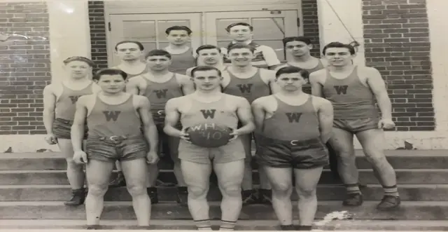
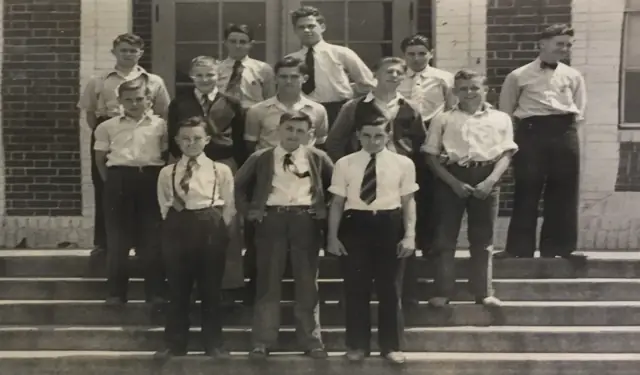
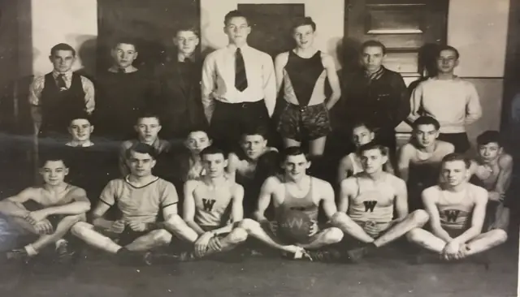
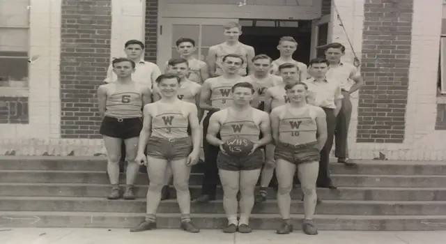
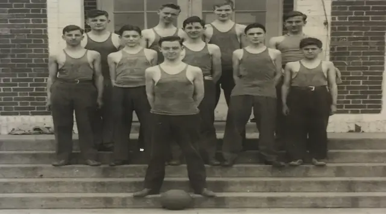
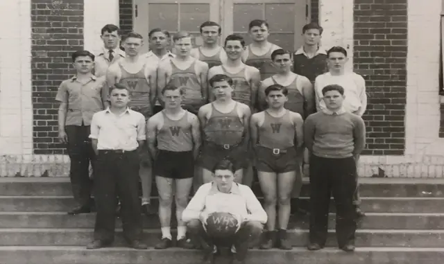
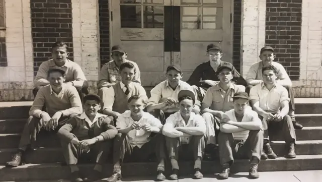
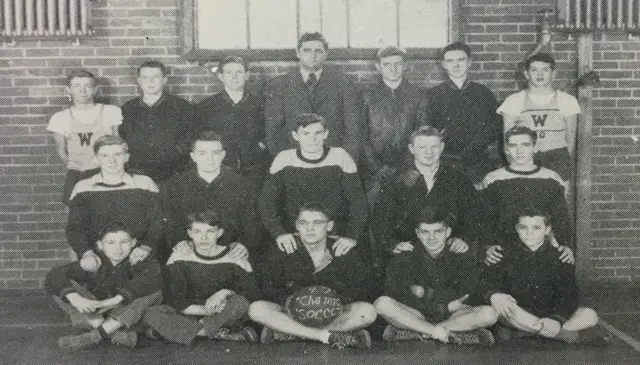
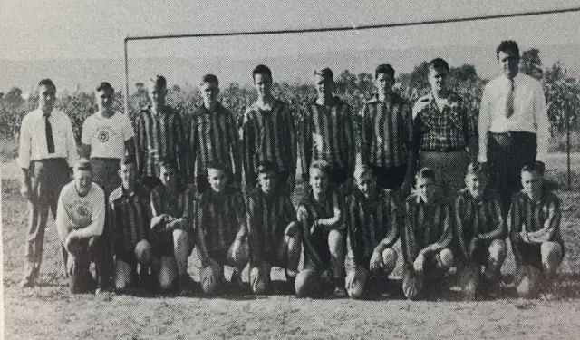
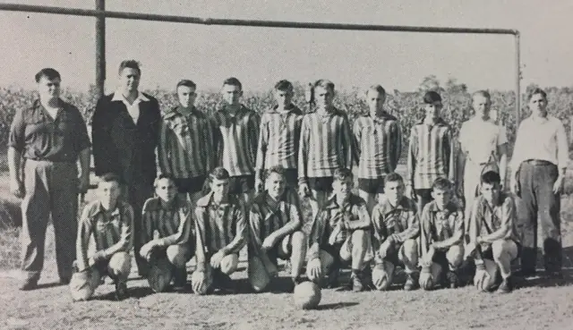
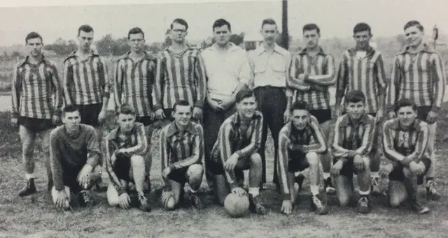
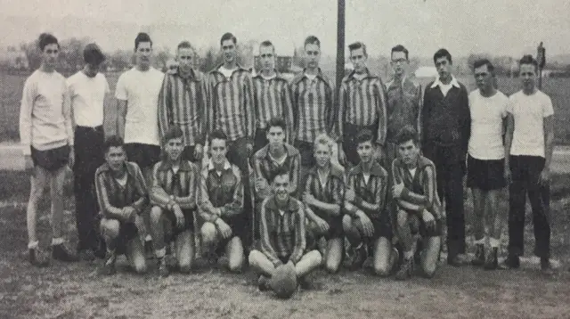
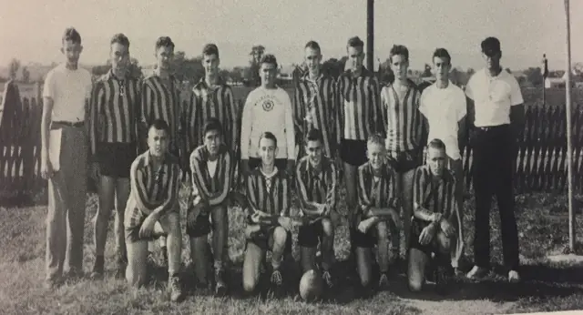
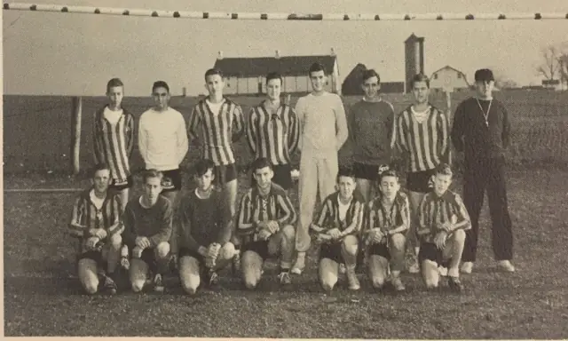
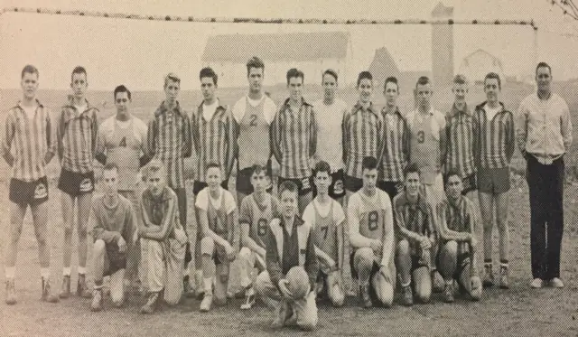
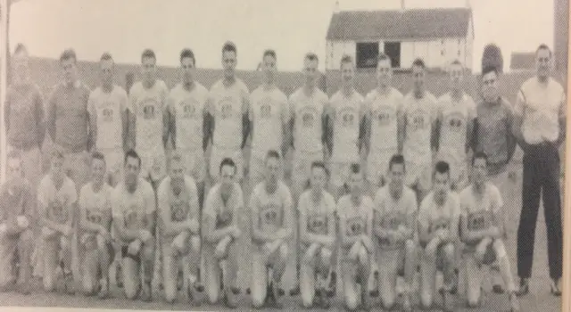
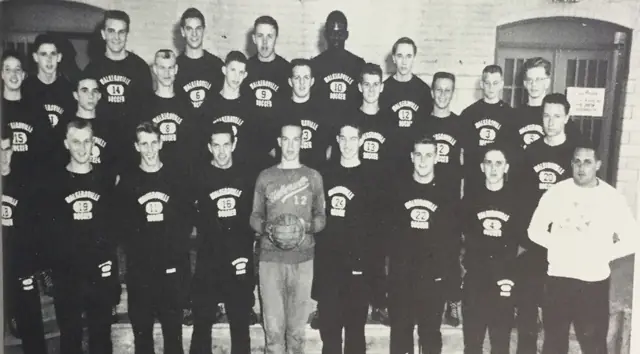
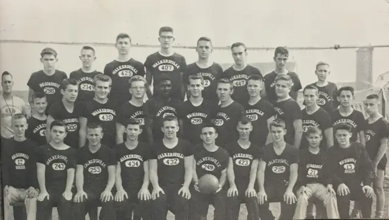
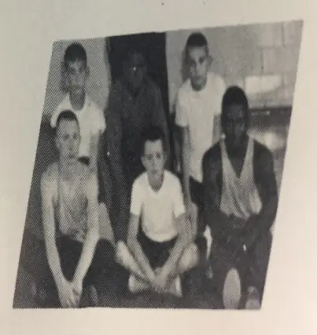
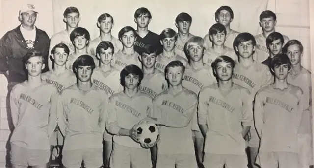
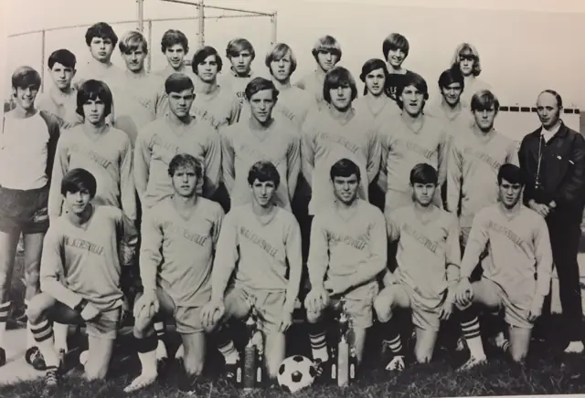
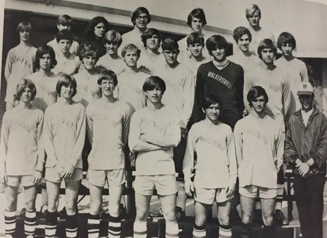
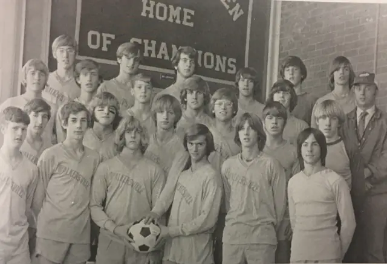
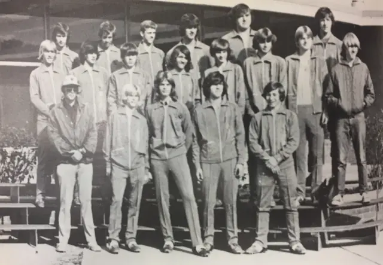
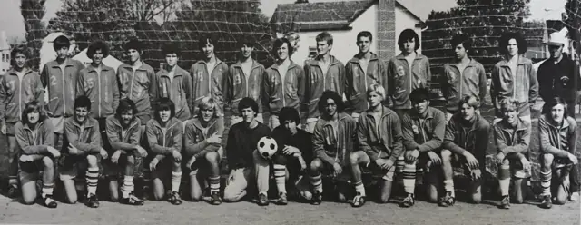
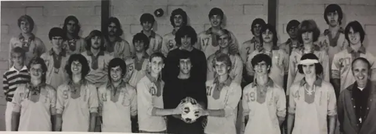
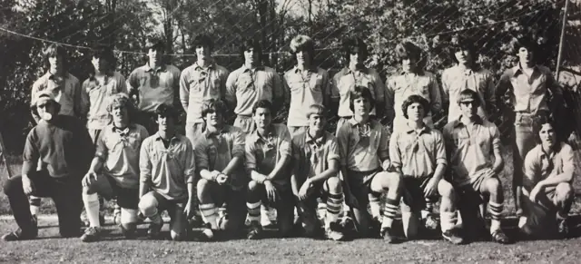
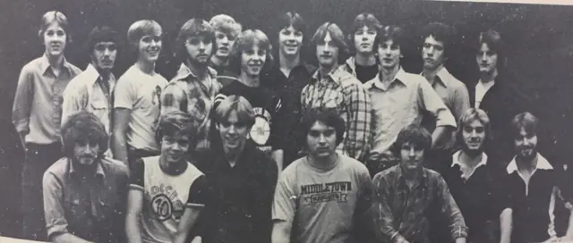
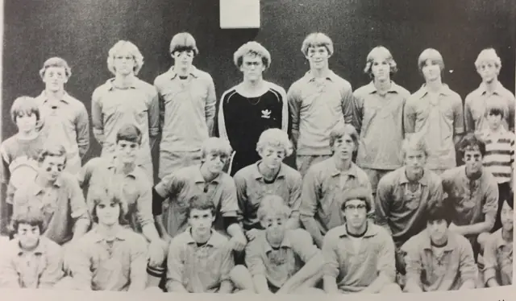